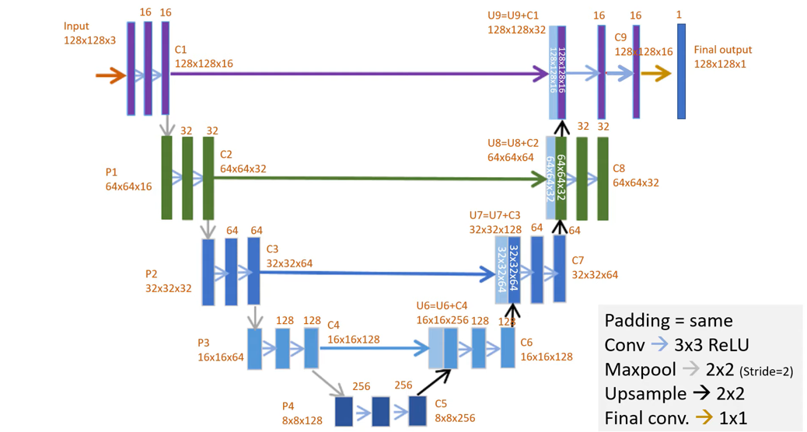

Delineating agricultural parcels using deep learning
List of abbreviations
- DS: Data Science
- CS: Computer Science
- DL: Deep Learning
- RS: Remote Sensing
- EO: Earth Observation
- CNN: Convolutional Neural Network
- NDVI: Normalized Difference Vegetation Index
Table of contents
- The Data Science part
- History of edge detection
- UNet
- The Computer Science part
- Introduction to openEO
- openEO workflows
- openEO in practice
- Demo notebook
- How to make use of openEO yourself
Table of contents
- The Data Science part
- History of edge detection
- UNet
- The Computer Science part
- Introduction to openEO
- openEO workflows
- openEO in practice
- Demo notebook
- How to make use of openEO yourself
Pre-DL edge detection methods
- Roberts cross
- Sobel
- Prewitt
- Laplacian
- Canny
Filters, but... small number and not trainable
Rise of DL: CNN
When thinking of filters and trainable parameters, we think of...
More complex CNN's
Still are composites of these basic operations
What.. but where?
Standard CNN's can be used to predict what is in the image, but not where in the image it is
Ciresan et al. 2012
Works by doing inference using a CNN (i.e., classifying "what") for every pixel in the image (hence getting an idea about the "where")
Outperformed by large margin competition on ISBI 2012 segmentation challenge, but...
- Slow
- Small receptive field
The solution: UNet
- Based on paper: https://arxiv.org/pdf/1505.04597.pdf
- Original code based on caffe and available as well
- Winner of ISBI cell tracking challenge 2015
The authors succesfully attempted to calculate both the "what" and the "where" in one single neural network by adding an upconvolution path to a standard CNN recreate original image dimensions
Overlap strategy: mirroring
Our UNet implementation
Adaptations we made to original Unet:
- We used sigmoid instead of softmax with two classes
- We are using same padding instead of valid padding (=no padding) > no need for cropping
- Our input and output dimensions are different (128x128)
- Added batch normalization
Our UNet implementation

Table of contents
- The Data Science part
- History of edge detection
- UNet
- The Computer Science part
- Introduction to openEO
- openEO workflows
- openEO in practice
- Demo notebook
- How to make use of openEO yourself
Solution: openEO
openEO develops an open application programming interface (API) that connects clients like R, Python and JavaScript to big Earth observation cloud back-ends in a simple and unified way.
website of openEO platform
Solution: openEO
Various backends can be accessed through openEO using same client side syntax
openEO: data harmonization
openEO: inner workings
Client operations are transformed to JSON in a format that we call "process graphs", and sent to the various backends to be interpreted and executed
openEO: datacubes
Collections are represented as datacubes. Datacubes are multidimensional arrays with one or more spatial or temporal dimension(s)
Datacubes
Table of contents
- The Data Science part
- History of edge detection
- UNet
- The Computer Science part
- Introduction to openEO
- openEO workflows
- openEO in practice
- Demo notebook
- How to make use of openEO yourself
ML workflow: data collection
Available collections
76 collections available, a.o.:
Sentinel 1-2-3-5p
Landsat 4-5-7-8
Copernicus DEM
PROBA-V
MODIS
Copernicus Global Land
ECMWF Agera5
Coming up:
WorldCover Landcover
EEA Phenology
Commercial data
Additional Euro Datacube collections
ML workflow: feature engineering
Feature engineering operations
- Masking
- Filtering
- Band math
- Aggregating over temporal periods
- Aggregating spatially
- Merging cubes
- Rescaling
- Resampling
- Applying functions along the temporal or band dimension
- Calculating indices
- Feature sampling
ML workflow: modeling & evaluation
Inference
If you generated a model inside of openEO, you will do inference using predict_random_forest or predict_catboost.
- Documentation
- Example code
Table of contents
- The Data Science part
- History of edge detection
- UNet
- The Computer Science part
- Introduction to openEO
- openEO workflows
- openEO in practice
- Demo notebook
- How to make use of openEO yourself
Loading a collection
connection = openeo.connect(“https://openeo.cloud.be”)
.authenticate_oidc()
s2_cube = connection.load_collection("SENTINEL2_L2A",
spatial_extent={"west":5.1,"east":5.2,"south":51.1,"north":51.2},
temporal_extent=["2020-05-01","2020-05-20"],
bands=["B03","B04","B08"])
Overview of all collections
Method description of load_collection
Overview of all processes when coding: connection.list_processes()
Job management
Two types of jobs: synchronous and batch jobs.
Synchronous jobs: fast calculations over small areas, direct download
Batch jobs: heavier operations over larger areas / large time periods, downloaded later using a job ID
Synchronous vs batch jobs
Synchronous jobs
s2_cube.max_time().download("out.geotiff",format="Gtiff")
Batch jobs
job = s2_cube.execute_batch("out.geotiff",format="Gtiff")
job = s2_cube.send_job("out.geotiff",format="Gtiff")
job.start_job()
job.describe_job()
job.stop_job()
job.status()
job.logs()
Filtering in practice
Temporal filter
s2_cube.filter_temporal(extent="2016-01-01","2016-03-10"])
Band filter
s2_cube.band("B02")
Spatial filter
s2_cube.filter_bbox(west=5.15,east=5.16,south=51.14, north=51.16, crs=4326)
Band math
Saving bands in a variable
B04 = s2_cube.band("B04")
B08 = s2_cube.band("B08")
Doing some band math
ndvi_cube = (B08 – B04) / (B08 + B04)
One-liners
s2_cube.apply("absolute")
s2_cube.apply(lambda x: x*2+3)
s2_cube.apply(lambda x: x.absolute().cos())
See slide on UDF's for difference between apply, apply_dimension, reduce_dimension and apply_neighbourhood
More complex operations
s2_cube.reduce_dimension(max, dimension="t")
from openeo.processes import array_element
def callback(data):
band1 = array_element(data, index=0)
band2 = array_element(data, index=1)
return band1 + 1.2 * band2
s2_cube.reduce_dimension(callback, dimension="bands")
def callback2(data):
return data.mean()
s2_cube.reduce_dimension(callback2, dimension="t")
Table of contents
- The Data Science part
- History of edge detection
- UNet
- The Computer Science part
- Introduction to openEO
- openEO workflows
- openEO in practice
- Demo notebook
- How to make use of openEO yourself
Table of contents
- The Data Science part
- History of edge detection
- UNet
- The Computer Science part
- Introduction to openEO
- openEO workflows
- openEO in practice
- Demo notebook
- How to make use of openEO yourself
Early adopter
- full access to all features of the platform
- support on the forum and via an e-mail helpdesk
- a discount on resource costs
- ability to apply for and receive an ESA sponsored package that covers the full monthly cost of the package
early adopter procedure
apply for 30 day free trial
Questions ?
Contact us on our forum or send us an email
jeroen.dries@vito.be
bart.driessen@vito.be